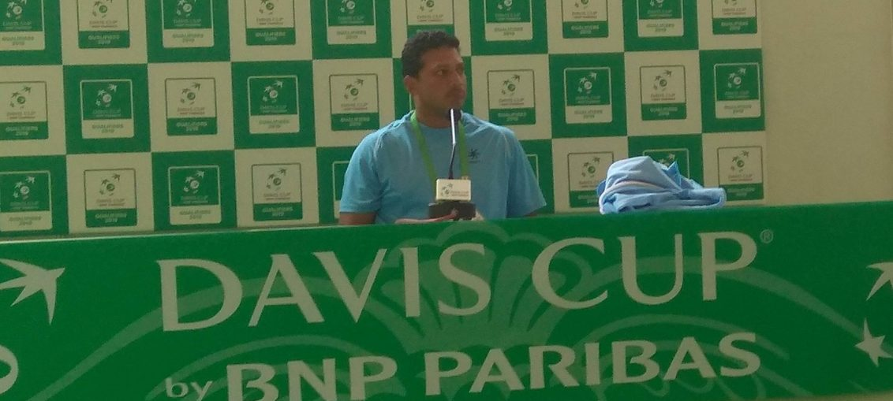

Posted at Date: January 31, 2019
Credit : রাইট স্পোর্টস ওয়েব ডেস্ক
অজুহাত এবং লিয়েন্ডারের জন্য ‘না’ ঝুলছে মহেশের ডেভিস-ভারতে!

‘না!’ আঁতকে-ওঠা ‘না’ নয়, মাস্টারমশাইরা যেমন কড়া চোখে অবাধ্য ছাত্রকে ‘না’ বলেন, তেমন জোরালো, সুনিশ্চিত স্বর মহেশ ভূপতির। কলকাতায় ডেভিস কাপ খেলতে এসেছেন ভারতীয় দল নিয়ে, কলকাতার ছেলে লিয়েন্ডার পেজের না-থাকা, বিশেষ করে ঘাসের কোর্টে, অসুবিধাজনক কিনা প্রশ্নের জবাবে। এক-শব্দের উত্তর। কোনও ব্যাখ্যা-ট্যাখ্যার বালাই-ই নেই! সেভেন-এইটের ক্লাসরুম মনে পড়ে যেতে বাধ্য, কড়া শিক্ষকমহাশয়রা যেমন বলতেন, ‘না মানে না’। তারপর, কোন্ ছাত্তরের আর শিক্ষককে জিজ্ঞেস করার সাহসে কুলিয়েছিল যে, না মানে হ্যাঁ কী করেই বা হবে স্যর? শুক্রবার শুরু ডেভিস কাপ টাই। কলকাতার সাউথ ক্লাবে ১৬ বছর পর। বৃহস্পতিবার সূচি তৈরির লটারি। তারও একদিন আগে আরও একবার সরকারি সাংবাদিক সম্মেলনে মহেশ অবশ্য বাকি সময়ে খোশমেজাজেই। রবিবার যুবভারতীতে বড় ম্যাচ দেখে আসার পর নিজে ফুটবল খেলতে গিয়ে চোট পেয়েছেন, লেংচে হাঁটতে হাঁটতে রসিকতা করে বলেও ফেলেছেন, ‘মরসুমের জন্যই বাইরে!’ ডেভিস কাপের এই বিশ্বকাপের বাছাইপর্বে অবশ্য ইতালিকে মরসুমের জন্য বাইরে পাঠাতে তৈরি হচ্ছেন সেই শহরে যেখানে ডেভিস কাপে অভিষেক হয়েছিল তাঁর, বছর ২৪ আগে।
লিয়েন্ডার প্রসঙ্গে যেমন কড়া, নিজের দলের সম্ভাবনা প্রসঙ্গেও মহেশ কিন্তু কোনওভাবেই রাখঢাক করেননি। ‘আমরা চেয়েছিলাম ঘাসের কোর্টে খেলতে, পেয়েছি। ইতালির পছন্দের ক্লে কোর্টে খেলা নয়। তারপরও হেরে গেলে অজুহাত দেওয়ার কিছু থাকবে না, কেউ শুনবেও না।’ তবে, মেনে নিলেন না ইতালির অক্রীড়ক অধিনায়কের দাবি। ভারত ‘আন্ডারডগ’ নয়, বলেছিলেন কোরাদো বারাৎজুত্তি, একদিন আগেই। মহেশ এখানেও তাঁর দু-হাতের জোরালো ব্যাকহ্যান্ডের মতোই সপাট। ‘নিজেদের মধ্যে আমরা কী বলি বা না বলি, আলাদা। খেলার একটা নিয়ম আছে। দুটো দল খেললে একটা দল ফেভারিট হয়, অন্যটা আন্ডারডগ। সেটা ঠিক করা হয় কাগজে-কলমে বিশ্লেষণে, দুটি দলের র্যাঙ্কিং এবং খেলোয়াড়দের পারফরম্যান্সের হিসাবে। সেই হিসাবটা সর্বত্রই এক। আর তাতে কোনও সন্দেহ নেই, ইতালি এই টাই শুরু করছে ফেভারিট হিসাবে। তা হলে আমরা তো স্বতঃসিদ্ধভাবেই আন্ডারডগ, তাই না?’ বিপক্ষের অধিনায়ক নিজে ছিলেন ১৯৭৬ ডেভিস কাপজয়ী ইতালি দলে। তাই পাঁচ-সেট থেকে তিন-সেট, তিনদিনের বদলে দুদিনের এই নতুন ফরম্যাট তাঁর মোটেও পছন্দ নয়। মহেশ এখানেও বিরোধিতার রাস্তায়। ‘আমাদের মতো, র্যাঙ্কিংয়ে তুলনায় পিছিয়ে-থাকা দেশের কাছে সেরা সুযোগ এগিয়ে-থাকা দেশগুলোকে হারানোর। সবাই মেনে নেবেন যে, এগিয়ে-থাকাদের বিরুদ্ধে পাঁচ সেটের মধ্যে তিন সেট জেতার চেয়ে সহজতর তিন সেটের মধ্যে দুটিতে জয়। এই পরিবর্তন আমাদের জন্য অবশ্যই আরও ভাল কিছু করার সুযোগ।’
এল ক্রিকেট প্রসঙ্গও। নিজেই টেনে আনলেন। সিঙ্গলসে ভারতীয় দলের সেরা প্রাজ্ঞেশ গুণেশ্বরন বাঁহাতি। মহেশের মতে যা, ভারতীয় ক্রিকেট দলের ওপেনিংয়ে ডান এবং বাঁহাতি ক্রিকেটারের উপস্থিতির মতো। বিপক্ষকে যাতে চমকে দেওয়া যায় বা সমস্যায় ফেলা যায়। ‘বড় সার্ভ আছে হাতে, ফোরহ্যান্ডটাও ভাল। বাঁহাতি হওয়াটা বিপক্ষের কাছে বাড়তি চাপ। দেখা যাক।’ তরুণ তুর্কিদের নিয়ে তাঁর উচ্ছ্বাসের জায়গাও পরিষ্কার। ‘যেখানে আছে ওরা, আরও এগোতেই পারে। পিছিয়ে আসার কোনও জায়গাই নেই। একশোর আশেপাশে, কাছাকাছি সবাই। চাইব ৬৫-৭০ র্যাঙ্কিংয়ে পৌঁছক, থাকুক।’ জেরার্দ পিকের সংস্থা কসমস জড়িত হওয়ার পর এবার ডেভিস কাপের মূলপর্বের আসর বসবে মাদ্রিদ শহরে। আগামী নভেম্বরে, এক সপ্তাহের জন্য। খেলবে মোট ১৮টি দল, যাদের মধ্যে ১২ দল পাওয়া যাবে এই ১-২ ফেব্রুয়ারি, বিশ্বের ১২ প্রান্ত থেকে। ওই সাতদিনের ডেভিস কাপকে যেহেতু বলা হচ্ছে ‘টেনিসের বিশ্বকাপ’, ভারত তাতে শুরুতেই অংশ নিতে পারে, শুক্র-শনিবার অসাধারণ টেনিস খেলে ইতালিকে হারিয়ে দিতে পারলেই। সম্ভাবনা অমূলক নয়, ইতালির অধিনায়কের কথাতেই পরিষ্কার। ‘খাতায়-কলমে আমরা এগিয়ে, জানি। সঙ্গে এটাও জানি যে, খেলাটা হবে ঘাসের কোর্টে। সার্কিটে এখন ঘাসে আর ক’টাই বা টুর্নামেন্ট হয়? দুটো বড়জোর। তাই ঘাসের কোর্টে খেলা নিয়ে খুব বেশি মাথা ঘামায় না কেউই। কিন্তু, খেলা ভারতের বিরুদ্ধে আর ওদের মনে হয়েছে, ঘাসের কোর্টে খেলে আমাদের অসুবিধায় ফেলা যাবে। ঠিকই তো। আমাদের দেশে যদি কখনও ভারতের বিরুদ্ধে খেলা হয়, আমরা ক্লে-কোর্টেই খেলব।’
Top Stories

Calcutta Sports Journalists' Club requests the pleasure of your company at its annual awards functionMore...
Jasprit Bumrah has been declared fit and he will now be available for selection for India's third Test against England at Trent Bridge. More...

Ronaldo has increased Juventus' standing among Europe's elite. More...